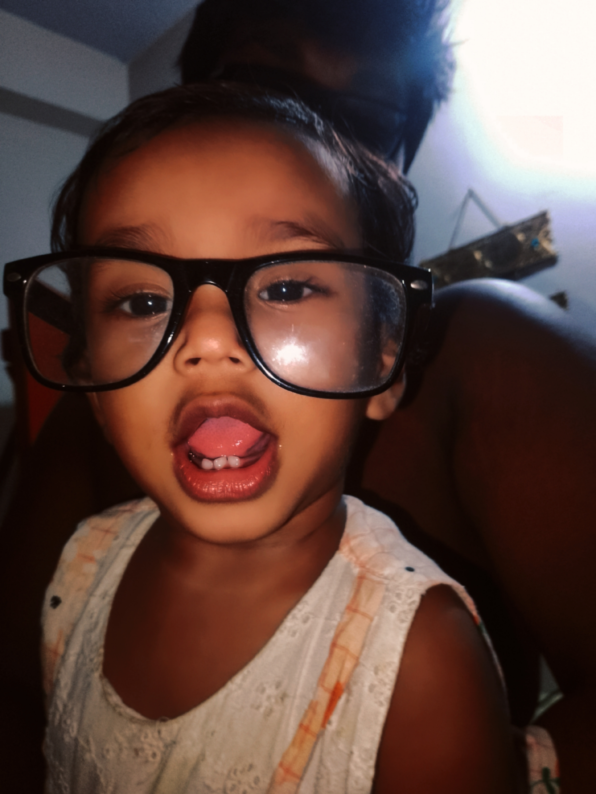

এটি আমার গল্পের ওয়েবসাইট। এখানে আমি বিভিন্ন গল্প শেয়ার করবো।
দেখছেন কি গ্লাস টা পড়ছে। ইনি যে আমার মেয়ে, খুব দুষ্টু। সারাদিন এদিক-ওদিক ছুটো ছুটি করে। অনেক ভালো লাগে ওকে দেখলে। আম্মুর কথা মনে পড়ে যায়। সবাই আম্মুর জন্য দোয়া করবেন।
আমাদের কিছুক্ষনের দুষ্টামি..
এখন যে গানটা শুনতে পাবেন, সেটা সম্পূর্ণ আমার বানানো গান... আর্টিফিশিয়াল ইন্টেলিজেন্ট এর মাধ্যমে বানানো হয়েছে।
Tere bina zindagi adhoori si lagti hai
Aankhon mein aansu teri yaad jab aati hai
Dil ye sambhale par kabhi na sambhalta
Har pal ye dard teri yaadon mein rehta
[Chorus]
Tere bina main kaise jeeun
Tere bina har raah hai sun
Dhadkan mein tu par tu kahaan
Tere bina hai zindagi gumaan
আমার গল্পটা শুনতে হলে আমার শুরু থেকে শেষ পর্যন্ত আপনাকে জানতে হবে তাই আমি এখানে আমার জীবনের শুরু থেকে শেষ পর্যন্ত আপলোড করতে থাকবো আপনি জানতে থাকবেন।
যাইহোক দ্রুত আমি এখানে গল্প আপলোড করা শুরু করব ইনশাআল্লাহ, ততক্ষণ পর্যন্ত আমার সাথে থাকতে হবে, ভালোবাসা দিতে হবে, নিতে হবে, রাখতে হবে,ভালো থাকতে হবে ভালো রাখতে হবে।
সুস্থ থাকবেন সবাই ধন্যবাদ